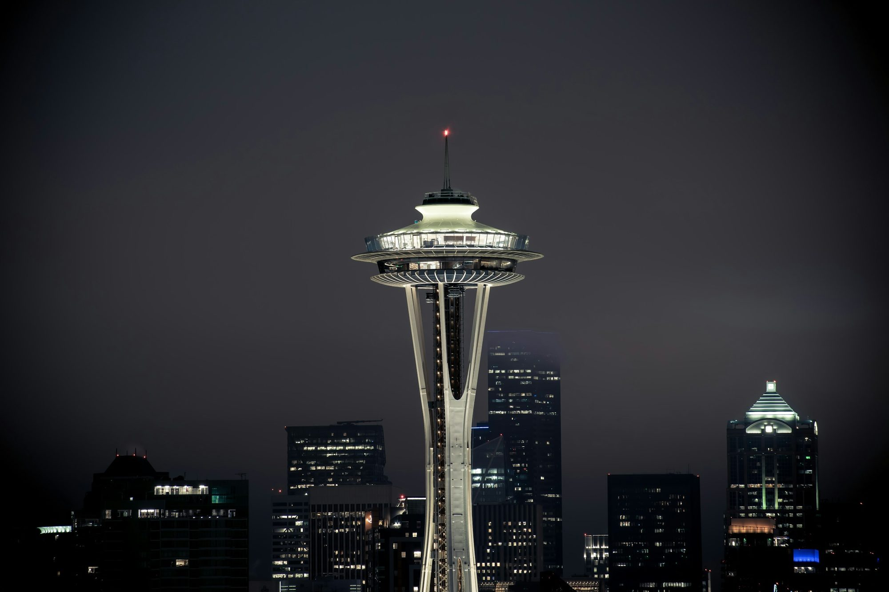

Washington · Seattle
Where to stay in Seattle
Walk to the market, or ride one train to it. Pioneer Square is the stay locals argue against.

For a first weekend, sleep where you can walk to the market or ride one train to it. A March 2024 r/SeattleWA thread names Belltown, Lower Queen Anne, and Capitol Hill. A March 2023 r/Seattle thread picks Belltown over South Lake Union for a visitor, because SLU has less of what you came to see. A May 2026 thread is blunt about Pioneer Square: several people say skip it after dark, and one person who walks the waterfront still likes the hotel by the ferry dock. SLU gets described as cleaner and emptier at night. Capitol Hill is the neighborhood if the evenings matter more than rolling out of bed into Pike Place.
Waterfront, if the window is the stay
The Edgewater, Pier 67, 2411 Alaskan Way
The hotel’s own facts page calls it Seattle’s only over-water hotel, built in 1962, 223 rooms, every room a gas fireplace, a $34 nightly destination fee, and valet at $66 with no self-park. Pike Place is a walk. The review split is the point. Tripadvisor, on a very large count, sits at 4.1 and the recent reviews argue about dated halls, slow Wi-Fi, train noise, and fees. Yelp is harsher. Google is kinder. Stay here for the water and the fireplace. Do not stay here expecting a new luxury room at a simple rate. A March 2026 review from a longtime guest lists dirty windows and a missing shade and still cares about the place. Read that as affection with a complaint, not as a reason to pretend the building is new.
Belltown and the center
Belltown is the walk to the market, the sculpture park, and Seattle Center. It is also a real downtown edge, which means you will see the city at night, not a resort. If you want that walk and a simpler hotel, look here before you look at Pioneer Square.
Thompson Seattle, 110 Stewart
A short walk from Pike Place. Yelp is a 3.6. Tripadvisor, on a much larger count, is a 4.3. The recent-review summary praises the location and the rooftop, then lists small rooms and street noise. A July 2026 review describes a hard mattress, dusty details, and a rattling air conditioner, and still credits housekeeping for being fast. Stay here for the walk to the market. Do not stay here expecting a quiet luxury room. Confirm the view on the room you are actually buying.
South Lake Union, if you want quieter streets
citizenM South Lake Union, 201 Westlake Ave N
Compact rooms, which both Yelp highlights and Tripadvisor reviews say out loud. Google and Tripadvisor sit close together. Yelp is a little lower, on a small count. The neighborhood trade-off is the one in the 2023 thread: you will go downtown anyway, and the streets empty earlier. It suits a short stay and a walk toward the Needle. It does not suit two people who wanted a real living room, or anyone who wanted Capitol Hill’s night.
Capitol Hill, if dinner is the point
The 1 Line stops here, which is the car-free reason to choose it over Queen Anne. You give up the morning walk to the market. You gain Dick’s, Taurus Ox, and a neighborhood that is still going after downtown sits down. This pass did not land a Capitol Hill hotel with a clean set of listing scores, so book a room near the station and read the current reviews yourself.
Ballard, only if Ballard is the trip
Hotel Ballard, 5216 Ballard Ave NW
Twenty-nine rooms, on the hotel’s own Tripadvisor description, next to Ballard Avenue. Yelp’s count is small. Tripadvisor’s is larger and kinder. A September 2026 review praises the rooms and then says the shower ran hot and cold. You are a bus ride from the market. The locks are the daytime errand. Do not pick this for a one-night arrival from the airport.
Skip as a default
Pioneer Square, unless you have a reason. The May 2026 thread is not subtle. Queen Anne’s upper hill, unless Kerry Park is the morning you want and you will climb for it.
Ace Hotel Seattle, 2423 1st Avenue
A small Belltown hotel if you can carry a bag upstairs. Tripadvisor reviews say there is no elevator, and they praise the walk to the market. An April 2026 review says a truck parked on the street was broken into. A June 2024 review says guests were locked out after the desk closed. That is one account, not a pattern, and it is the kind of complaint that decides the booking. A clean Yelp listing for this Seattle building did not come back, so Yelp is left off. The Portland Ace is a different, closed hotel. Do not mix them up.
Sources
Hours, fares, and closures change. Ratings are the scores and review counts read in October 2026. Community notes are paraphrased from threads linked below.
- Pike Place Market
- Seattle Art Museum, Olympic Sculpture Park
- Seattle Center
- Space Needle
- Visit Seattle, neighborhoods
- Visit Seattle, Queen Anne
- Chittenden Locks
- Washington State Ferries
- Sound Transit 1 Line
- The Edgewater, official facts page
- r/SeattleWA, where to stay, March 2024
- r/SeattleWA, SLU vs Pioneer Square, May 2026
- r/Seattle, Belltown or SLU, March 2023
Last checked: October 2026.